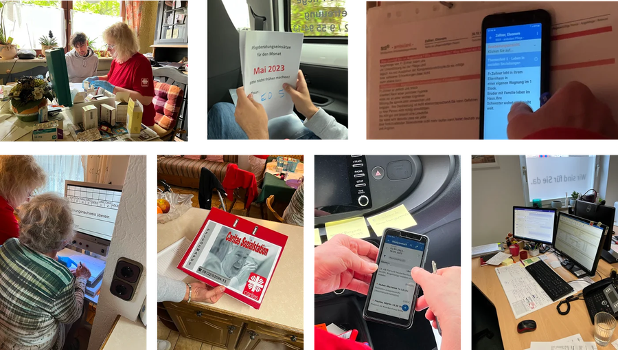
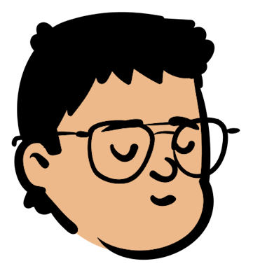
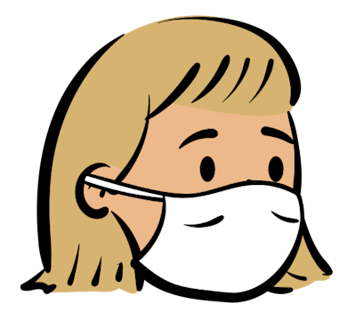
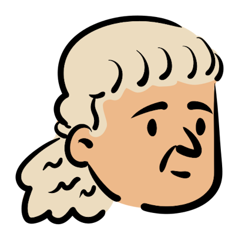
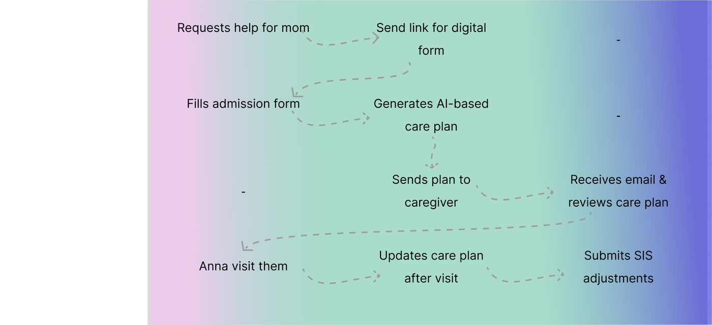
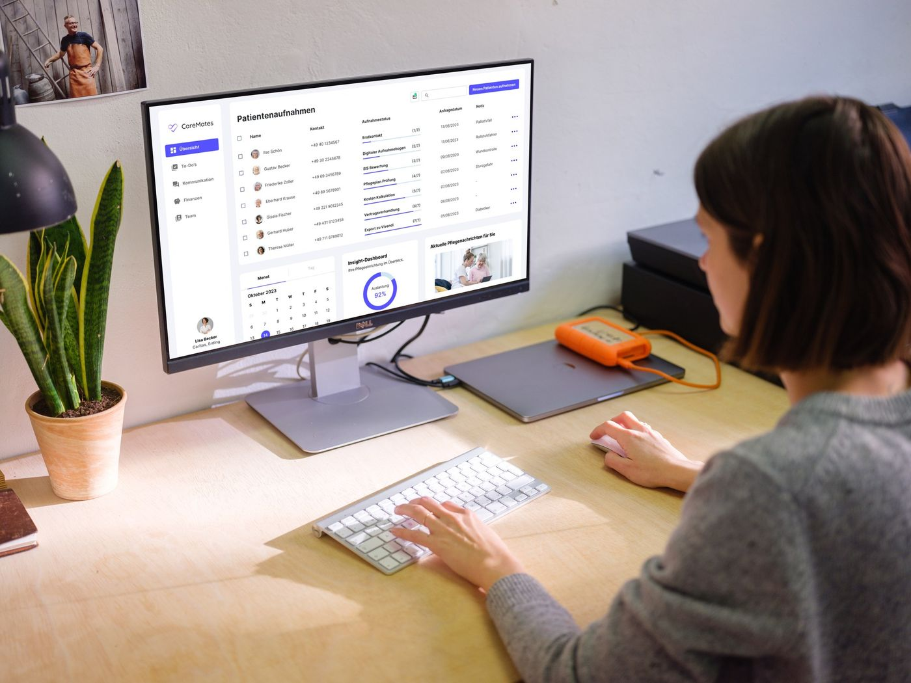
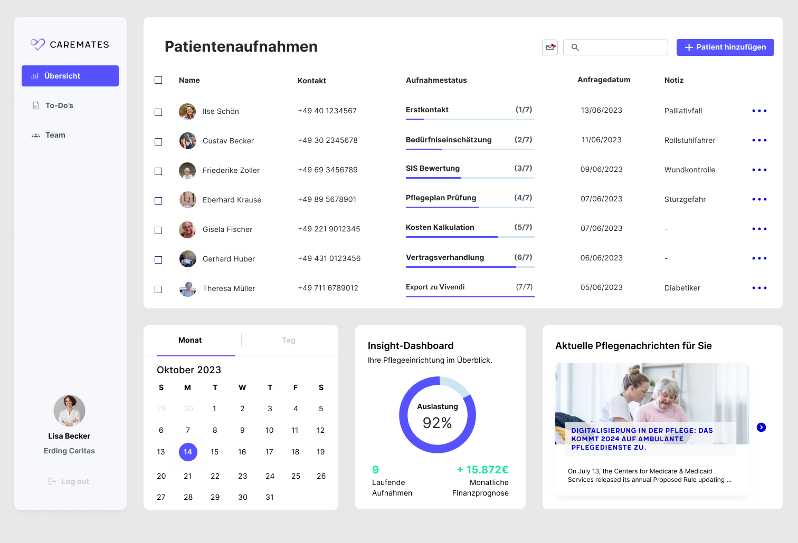
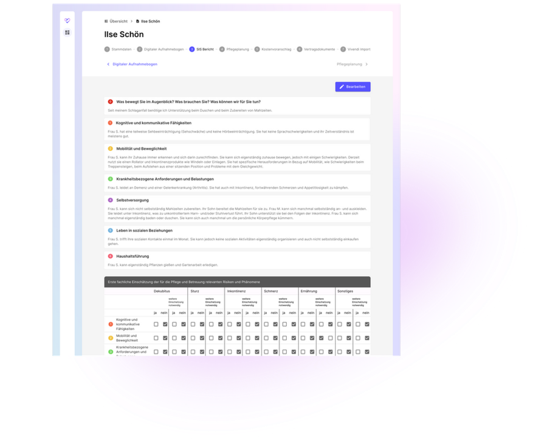

In elderly care facilities across Germany, the patient admission process is reaching a breaking point. A growing administrative burden limits caregivers' capacity to focus on what truly matters: people — and calls for a faster, more intuitive way to handle admissions.

Field research at Caritas Erding
To deeply understand the current admission process and daily routines in elderly care, we collaborated with Caritas Erding — a facility managing over 180 patients and using the Vivendi NG digital system.
- 1 kick-off interview with the Care Manager (Lisa)
- 3 in-depth interviews with caregivers (5–20 years of experience)
- 1 day of on-site shadowing, following caregivers on their morning tours
Key observations
- Documentation overload: caregivers must complete multiple forms daily (admission, evaluation, medication, billing), often outside working hours
- Low digital confidence: many older caregivers preferred handwritten notes; some avoided the Vivendi app entirely
- Technical friction: frequent system updates made the app unusable on weekends, forcing a fallback to analog folders
- Mismatch of tools and mindset: even with a digital system, the workflow remained paper-centric due to poor UX and lack of trust
User journey


Teresa needs intensive care from her son George; but he's starting a new job and can't take care of his mother anymore

Anna has worked for Caritas Erding for more than 10 years as a caregiver

How the product works
Imagine you're a patient who wants to contact Caritas:
- 01
First contact
A new admission request reaches the caregiver, who adds the patient in a few clicks
- 02
Digital admission form
Relatives fill out the form in ~15 min; the caregiver is notified and can view the data
- 03
AI-supported care analysis
CareMates auto-generates a Structured Information Collection (SIS) and a patient risk assessment
- 04
AI-automated care planning
A tailored care plan is drafted for the caregiver to review, learning from their preferences over time
- 05
One-click cost estimate
A detailed cost estimate is generated instantly, then finalized with relatives and patients
- 06
Digital care contract
The care contract is generated, signed digitally or on paper, and ready to export

Design an AI-assisted admission tool that simplifies documentation and enables caregivers to complete admissions in one hour instead of five
- Reduce admission time from 5 hrs → 1 hr
- Implement data-driven care management
- Support caregivers with CareMates AI
Why MUI for Figma
Given our small team size and the need to move fast, I aligned with the engineers on adopting MUI for Figma as our shared design system — one library serving design, product, and development at once:
A comprehensive library of components, icons, and styles — customizable to the brand — to deliver work faster
Build MVPs efficiently and save hundreds of hours on UI design — a ready-made starting point for a design system
Design consistent, accessible interfaces autonomously, and preview how things look before coding them
Interface design
The dashboard consolidates all patient information into one scannable table, with admission stages shown as progress indicators (1/7–7/7)
A familiar SaaS side navigation brings To-Dos, Communication, Finances, and Team Management together in one place

The header guides caregivers through every stage — from Initial Contact to Export — so they always know where they are and what's next
A dynamic scoring table lets caregivers mark assessments directly in the interface; scores are auto-summarized and fed into the AI model

CareMates was recognized with the Strascheg Award and several startup competitions, validating both the market potential and the relevance of the problem. These wins reinforced our belief that meaningful innovation comes from combining user needs, business viability, and a clear product vision
This is only the beginning. We'll keep working closely with users, validate our assumptions through ongoing research, and refine the experience on real feedback — while meeting the highest standards of privacy and confidentiality in compliance with EU regulations
- CareMates was my first experience leading a product as a Design Lead — contributing across the entire lifecycle, from defining the vision and shaping strategy to building brand identity, running research, and designing the experience
- Learned to balance creativity with strategic thinking, collaborate across disciplines, and make design decisions that align both user needs and business goals
- Strengthened my confidence in facilitating discussions, driving alignment, and prioritizing initiatives that create meaningful impact
- Most proud of what the team accomplished together — it gave me a broader perspective on building products that are functional, scalable, empathetic, and human-centered